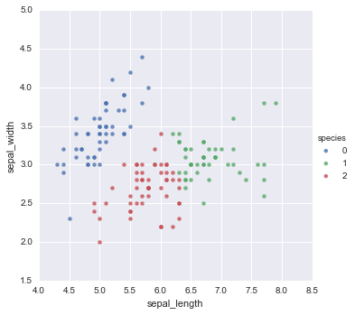
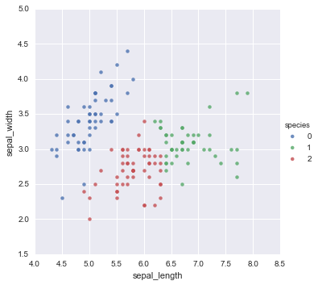

In [41]:
%matplotlib inline
import matplotlib.pyplot as plt
import numpy as np
from matplotlib import animation as ani
import seaborn as sns
import pandas as pd
In [ ]:
cluster.
In [1]:
# k-means
from sklearn import cluster
from sklearn import preprocessing
In [3]:
iris = sns.load_dataset("iris")
le = preprocessing.LabelEncoder()
le.fit_transform(iris.species)
Out[3]:
array([0, 0, 0, 0, 0, 0, 0, 0, 0, 0, 0, 0, 0, 0, 0, 0, 0, 0, 0, 0, 0, 0, 0,
0, 0, 0, 0, 0, 0, 0, 0, 0, 0, 0, 0, 0, 0, 0, 0, 0, 0, 0, 0, 0, 0, 0,
0, 0, 0, 0, 1, 1, 1, 1, 1, 1, 1, 1, 1, 1, 1, 1, 1, 1, 1, 1, 1, 1, 1,
1, 1, 1, 1, 1, 1, 1, 1, 1, 1, 1, 1, 1, 1, 1, 1, 1, 1, 1, 1, 1, 1, 1,
1, 1, 1, 1, 1, 1, 1, 1, 2, 2, 2, 2, 2, 2, 2, 2, 2, 2, 2, 2, 2, 2, 2,
2, 2, 2, 2, 2, 2, 2, 2, 2, 2, 2, 2, 2, 2, 2, 2, 2, 2, 2, 2, 2, 2, 2,
2, 2, 2, 2, 2, 2, 2, 2, 2, 2, 2, 2])
In [4]:
clf = cluster.KMeans(n_clusters=3, verbose=1)
clf.fit(iris[["sepal_length", "sepal_width"]], iris.species)
Initialization complete
Iteration 0, inertia 67.390
Iteration 1, inertia 46.036
Iteration 2, inertia 43.245
Iteration 3, inertia 39.989
Iteration 4, inertia 37.769
Iteration 5, inertia 37.200
Iteration 6, inertia 37.147
Iteration 7, inertia 37.100
Iteration 8, inertia 37.086
Converged at iteration 8
Initialization complete
Iteration 0, inertia 51.920
Iteration 1, inertia 37.765
Iteration 2, inertia 37.063
Iteration 3, inertia 37.051
Converged at iteration 3
Initialization complete
Iteration 0, inertia 62.230
Iteration 1, inertia 46.873
Iteration 2, inertia 40.701
Iteration 3, inertia 38.881
Iteration 4, inertia 38.221
Iteration 5, inertia 37.817
Iteration 6, inertia 37.351
Iteration 7, inertia 37.063
Iteration 8, inertia 37.051
Converged at iteration 8
Initialization complete
Iteration 0, inertia 54.320
Iteration 1, inertia 47.605
Iteration 2, inertia 43.791
Iteration 3, inertia 40.970
Iteration 4, inertia 38.957
Iteration 5, inertia 38.221
Iteration 6, inertia 37.817
Iteration 7, inertia 37.351
Iteration 8, inertia 37.063
Iteration 9, inertia 37.051
Converged at iteration 9
Initialization complete
Iteration 0, inertia 51.670
Iteration 1, inertia 38.183
Iteration 2, inertia 37.476
Iteration 3, inertia 37.101
Iteration 4, inertia 37.063
Iteration 5, inertia 37.051
Converged at iteration 5
Initialization complete
Iteration 0, inertia 73.500
Iteration 1, inertia 52.003
Iteration 2, inertia 49.497
Iteration 3, inertia 47.448
Iteration 4, inertia 45.700
Iteration 5, inertia 44.161
Iteration 6, inertia 43.045
Iteration 7, inertia 40.095
Iteration 8, inertia 38.468
Iteration 9, inertia 37.935
Iteration 10, inertia 37.430
Iteration 11, inertia 37.193
Iteration 12, inertia 37.063
Iteration 13, inertia 37.051
Converged at iteration 13
Initialization complete
Iteration 0, inertia 53.330
Iteration 1, inertia 41.359
Iteration 2, inertia 39.876
Iteration 3, inertia 38.468
Iteration 4, inertia 38.251
Iteration 5, inertia 38.074
Iteration 6, inertia 37.999
Iteration 7, inertia 37.878
Iteration 8, inertia 37.802
Iteration 9, inertia 37.714
Iteration 10, inertia 37.654
Iteration 11, inertia 37.439
Iteration 12, inertia 37.328
Iteration 13, inertia 37.260
Iteration 14, inertia 37.147
Iteration 15, inertia 37.100
Iteration 16, inertia 37.086
Converged at iteration 16
Initialization complete
Iteration 0, inertia 70.220
Iteration 1, inertia 49.673
Iteration 2, inertia 47.651
Iteration 3, inertia 45.908
Iteration 4, inertia 44.658
Iteration 5, inertia 44.004
Iteration 6, inertia 42.193
Iteration 7, inertia 39.743
Iteration 8, inertia 38.221
Iteration 9, inertia 37.817
Iteration 10, inertia 37.351
Iteration 11, inertia 37.063
Iteration 12, inertia 37.051
Converged at iteration 12
Initialization complete
Iteration 0, inertia 54.410
Iteration 1, inertia 43.316
Iteration 2, inertia 39.994
Iteration 3, inertia 38.334
Iteration 4, inertia 38.171
Iteration 5, inertia 37.999
Iteration 6, inertia 37.878
Iteration 7, inertia 37.802
Iteration 8, inertia 37.714
Iteration 9, inertia 37.654
Iteration 10, inertia 37.439
Iteration 11, inertia 37.328
Iteration 12, inertia 37.260
Iteration 13, inertia 37.147
Iteration 14, inertia 37.100
Iteration 15, inertia 37.086
Converged at iteration 15
Initialization complete
Iteration 0, inertia 51.720
Iteration 1, inertia 41.585
Iteration 2, inertia 39.876
Iteration 3, inertia 38.468
Iteration 4, inertia 38.251
Iteration 5, inertia 38.074
Iteration 6, inertia 37.999
Iteration 7, inertia 37.878
Iteration 8, inertia 37.802
Iteration 9, inertia 37.714
Iteration 10, inertia 37.654
Iteration 11, inertia 37.439
Iteration 12, inertia 37.328
Iteration 13, inertia 37.260
Iteration 14, inertia 37.147
Iteration 15, inertia 37.100
Iteration 16, inertia 37.086
Converged at iteration 16
Out[4]:
KMeans(copy_x=True, init='k-means++', max_iter=300, n_clusters=3, n_init=10,
n_jobs=1, precompute_distances='auto', random_state=None, tol=0.0001,
verbose=1)
In [5]:
[a for a in dir(clf) if not a.startswith("_") and a.endswith("_")]
Out[5]:
['cluster_centers_', 'inertia_', 'labels_', 'n_iter_']
In [6]:
clf.inertia_, clf.n_iter_
Out[6]:
(37.050702127659569, 4)
In [7]:
clf.cluster_centers_
Out[7]:
array([[ 5.006 , 3.428 ],
[ 6.81276596, 3.07446809],
[ 5.77358491, 2.69245283]])
In [11]:
iris_kmeans = iris.copy()
iris_kmeans["species"] = clf.labels_
sns.lmplot(data=iris_kmeans, x="sepal_length", y="sepal_width", hue="species", fit_reg=False)
sns.lmplot(data=iris, x="sepal_length", y="sepal_width", hue="species", fit_reg=False)
Out[11]:
<seaborn.axisgrid.FacetGrid at 0x117f5aa58>


In [21]:
from scipy.spatial import distance
In [30]:
distance.euclidean([0, 0], [1, 1])
Out[30]:
1.4142135623730951
In [32]:
# http://stackoverflow.com/questions/1401712/how-can-the-euclidean-distance-be-calculated-with-numpy
np.linalg.norm(np.array([0, 0]) - np.array([1, 1]))
Out[32]:
1.4142135623730951
In [65]:
# http://docs.scipy.org/doc/numpy/reference/generated/numpy.argmin.html
np.argmin([2,3,1]), np.argmax([2,3,1])
Out[65]:
(2, 1)
In [69]:
reshaped = np.array([4,5,6,1,2,3]).reshape(2, 3)
reshaped
Out[69]:
array([[4, 5, 6],
[1, 2, 3]])
In [78]:
np.argmin(reshaped), np.argmax(reshaped)
# flattenしたときのIndex
Out[78]:
(3, 2)
In [279]:
import pandas as pd
print(pd.isnull(np.array(['a', 1, 'b', np.nan, np.nan])))
print(pd.isnull(np.array(['a', 1, 'b', np.nan, None])))
np.array(['a', 1, 'b', np.nan, None])
[False False False False False]
[False False False True True]
Out[279]:
array(['a', 1, 'b', nan, None], dtype=object)
In [ ]:
# ランダムにクラスタとなるデータをK個選ぶ
# 各データは、K個のデータうち、一番近いクラスタに属させる
# クラスタ内の重心を変更する
In [60]:
import collections
def kmeans(data, n_cluster=3, max_iter=300, random_state=None, verbose=None):
# 初期化
centroids = init_centroids(data, random_state)
# 所属クラスタ
old_centroids = centroids
old_clusters = np.zeros(len(data))
for i in range(max_iter):
new_clusters = clusters(data, centroids)
if verbose:
print(i, collections.Counter(new_clusters), centroids)
centroids = move_centroids(data, n_cluster, new_clusters)
if old_centroids == centroids:
print("old_centroids == centroids")
print(old_centroids)
print(centroids)
break
old_centroids = centroids
return new_clusters
In [18]:
def init_centroids(data, random_state):
np.random.seed(random_state)
centroids_idx = np.random.choice(data.index, n_cluster)
centroids = [(data.loc[idx, "sepal_length"], data.loc[idx, "sepal_width"]) for idx in centroids_idx]
return centroids
In [19]:
def clusters(data, centroids):
d_centroids = []
for length, width in centroids:
d_centroids.append(np.linalg.norm(
np.c_[data.sepal_length - length, data.sepal_width - width], axis=1))
d_centroids = np.array(d_centroids).T
clusters = np.argmin(d_centroids, axis=1)
return clusters
In [26]:
def move_centroids(data, n_cluster, clusters):
new_centroids = []
for c in range(n_cluster):
c_data = data[clusters == c]
center = c_data.sepal_length.mean(), c_data.sepal_width.mean()
new_centroids.append(center)
return new_centroids
In [62]:
import ipywidgets
@ipywidgets.interact(
n_cluster=(2, 6, 1),
max_iter=(1, 100, 1),
verbose=False
)
def run_my_kmeans(n_cluster=3, max_iter=30, verbose=False):
iris_my_kmeans = iris.copy()
iris_my_kmeans["species"] = kmeans(iris_my_kmeans,
n_cluster=n_cluster,
max_iter=max_iter,
random_state=0,
verbose=verbose)
sns.lmplot(data=iris_my_kmeans, x="sepal_length", y="sepal_width", hue="species", fit_reg=False)
0 Counter({2: 85, 0: 47, 1: 18}) [(4.5999999999999996, 3.2000000000000002), (7.7000000000000002, 3.7999999999999998), (5.7999999999999998, 2.7000000000000002)]
1 Counter({2: 67, 0: 56, 1: 27}) [(4.9425531914893615, 3.3659574468085105), (7.283333333333336, 3.1333333333333337), (6.036470588235295, 2.870588235294118)]
2 Counter({2: 63, 0: 56, 1: 31}) [(5.014285714285713, 3.3357142857142863), (7.096296296296296, 3.1148148148148134), (6.031343283582089, 2.8014925373134334)]
3 Counter({2: 60, 0: 56, 1: 34}) [(5.014285714285713, 3.3357142857142863), (7.032258064516128, 3.0870967741935478), (5.995238095238095, 2.795238095238096)]
4 Counter({2: 58, 0: 56, 1: 36}) [(5.014285714285713, 3.3357142857142863), (6.985294117647057, 3.079411764705882), (5.97, 2.785000000000001)]
5 Counter({0: 56, 2: 56, 1: 38}) [(5.014285714285713, 3.3357142857142863), (6.952777777777776, 3.0861111111111104), (5.955172413793104, 2.770689655172414)]
6 Counter({0: 56, 2: 55, 1: 39}) [(5.014285714285713, 3.3357142857142863), (6.926315789473683, 3.0789473684210518), (5.9375, 2.7642857142857147)]
7 Counter({0: 55, 2: 54, 1: 41}) [(5.014285714285713, 3.3357142857142863), (6.910256410256409, 3.0871794871794864), (5.930909090909091, 2.752727272727273)]
8 Counter({0: 54, 2: 54, 1: 42}) [(5.014545454545454, 3.354545454545455), (6.8804878048780465, 3.0975609756097553), (5.9, 2.724074074074074)]
9 Counter({2: 54, 0: 53, 1: 43}) [(5.012962962962962, 3.3703703703703707), (6.869047619047618, 3.0928571428571425), (5.875925925925925, 2.7166666666666663)]
10 Counter({2: 53, 0: 52, 1: 45}) [(5.00943396226415, 3.383018867924529), (6.853488372093022, 3.0999999999999996), (5.857407407407408, 2.7037037037037037)]
11 Counter({2: 54, 0: 51, 1: 45}) [(5.0019230769230765, 3.390384615384616), (6.83333333333333, 3.086666666666666), (5.828301886792453, 2.70566037735849)]
12 Counter({2: 53, 0: 51, 1: 46}) [(5.003921568627451, 3.409803921568628), (6.83333333333333, 3.086666666666666), (5.811111111111113, 2.6999999999999997)]
13 Counter({2: 53, 0: 51, 1: 46}) [(5.003921568627451, 3.409803921568628), (6.823913043478258, 3.0782608695652165), (5.800000000000001, 2.6999999999999997)]
old_centroids == centroids
[(5.003921568627451, 3.409803921568628), (6.823913043478258, 3.0782608695652165), (5.800000000000001, 2.6999999999999997)]
[(5.003921568627451, 3.409803921568628), (6.823913043478258, 3.0782608695652165), (5.800000000000001, 2.6999999999999997)]

In [58]:
labels = pd.DataFrame({
"sk": iris_kmeans.species,
"my": iris_my_kmeans.species
})
labels["same"] = labels.sk == labels.my
labels.same.sum(), labels.shape[0]
Out[58]:
(148, 150)